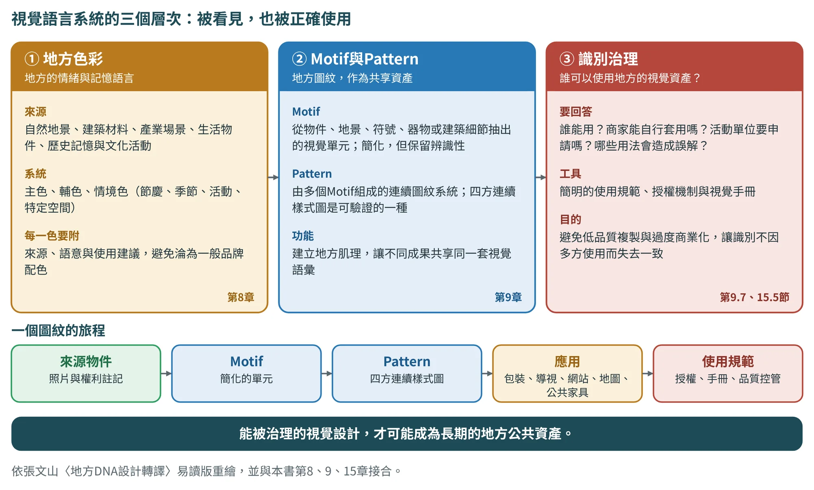
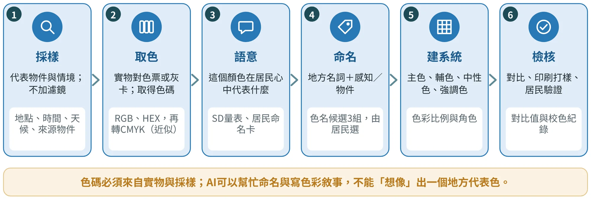
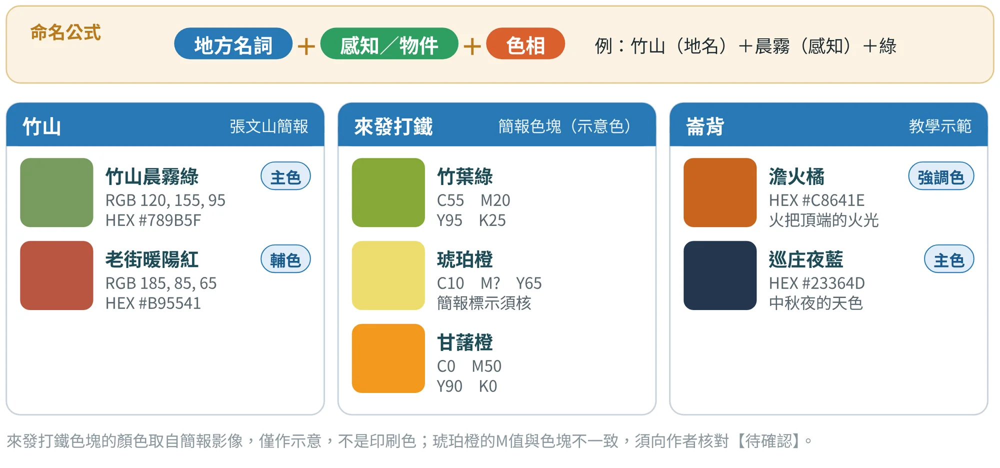
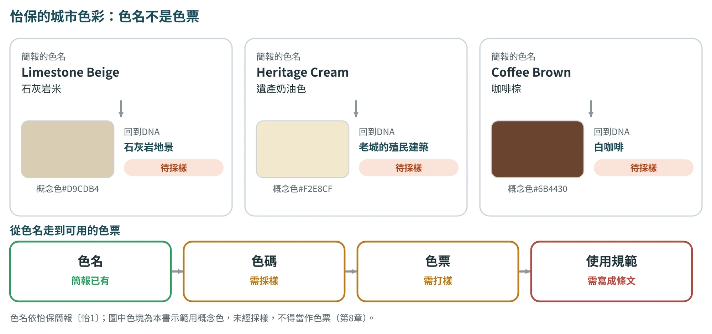
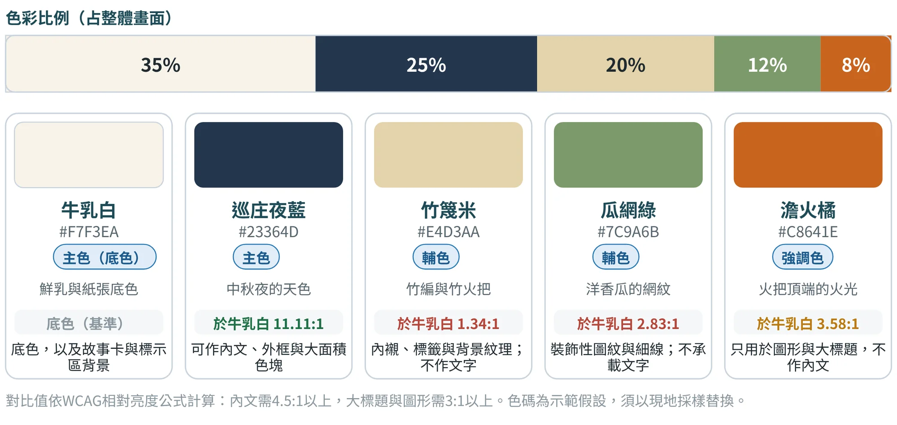

地方色彩
從田野採樣，建立可以追溯的地方色彩系統
8.1色彩是地方文化的語言#
張文山在簡報中，把城市色彩看作「一種可以視覺化呈現地方性的語彙系統」。以馬祖為例，色彩轉譯不只是建築物粉刷或觀光識別，而是由自然環境、軍事歷史與閩東文化孕育出來的色彩美學：石材與灰色調，反映傳統聚落的石砌建築；海洋藍與軍綠色，象徵海島地景與長期駐軍的歷史；紅磚色與暖橘色，呼應閩東建築與廟宇的色調。
這段話說明了兩件事。第一，地方色彩背後有來源：自然、人文與歷史各自貢獻了顏色。第二，色彩是一套「系統」，不是一個顏色：主色、輔色、強調色之間有比例，也有用法。這也是這一章要做的事：用可以追溯的方法，把地方的顏色採出來，並整理成能用在商品、包裝與視覺系統的規範。
視覺語言系統的三個層次
地方設計常被誤解為視覺美化。但在地方DNA設計轉譯裡，視覺設計不是最後的包裝，而是地方知識被公共化的重要媒介：色彩、圖紋、字體、版面、標誌、符號、影像風格與應用規範，都會影響地方如何被理解與記憶。作者的易讀版把地方視覺語言系統分成三個層次（圖8.1）：地方色彩（本章）、Motif與Pattern（第9章），以及識別治理（9.7節）。

地方色彩不應由設計師主觀選定，而要從自然地景、建築材料、產業場景、生活物件、歷史記憶與文化活動中萃取（表8.1）。建立色彩系統時，要區分主色、輔色與情境色：主色建立主要辨識，輔色支撐視覺層次，情境色用於節慶、季節、活動或特定空間（本章8.5節稱為色彩的角色與比例）。每一種色彩都要附上來源、語意與使用建議，避免地方色彩淪為一般品牌配色。
| 地方類型（示意） | 可能的色彩來源 |
|---|---|
| 海岸地方 | 海水、岩石、漁具與港口燈光 |
| 山林地方 | 樹皮、苔蘚、土壤、霧氣與木構材料 |
| 農村地方 | 稻穗、泥土、灌溉水道、農機與廟宇裝飾 |
| 工業地方 | 金屬、油漬、磚牆、工作服與機械設備 |
類型與來源依張文山〈地方DNA設計轉譯：從地方知識萃取到永續設計實踐的方法論〉（易讀版，2026年7月）整理；為示意，實際來源須由採樣與居民檢核決定（8.3、8.4節）。
8.2三種城市色彩的做法：馬祖、關西、臺北#
張文山的簡報整理了三個城市色彩的案例，說明「色彩系統、取色工具、取色來源、規劃要素」可以有不同的做法（表8.2）。從專業測色儀到手機App，工具不同，但共同點是：先建立採樣的邏輯，再用比對工具得到色碼，最後產出別人也能使用的規範。
| 項目 | 北緯26度島嶼顏色（馬祖） | 關西客家庄色彩 | 臺北都市色彩 |
|---|---|---|---|
| 色彩系統 | 自然色彩系統（NCS）、NCS色票 | Hex色碼、Dulux得利色票 | 色彩App（color toy、color snap等）；色票：Dulux得利色票 |
| 取色工具 | NCS測色儀實地測量取色 | 相機拍照進入電腦進行色票比對；近物以得利色票比對 | 拍照紀錄後，運用Photoshop馬賽克分析色彩 |
| 取色來源 | 自然色彩：山岳、海洋、岩石、植被 人文色彩：建築聚落、交通設施、漁業、民俗節慶 戰地色彩：碉堡 | 搜集地方的人文、歷史、地貌、作物，進行地方色彩的田野調查，並以點、線、面觀察路徑 | 行道樹四季色彩、地標色彩、橋樑色彩、政府機關標誌色彩、移動色彩、街道傢俱色彩 |
| 規劃要素 | 建築環境：建築色彩 建築外環境：廣告、標誌、街道傢俱、鋪裝色彩 | 店家、廣告商、設計者可以參考的色彩書 | 變電箱、廣告看板、公車亭 |
表中內容整理自張文山簡報「地方DNA的地方色彩轉譯工具與方法」；三個案例的細節與數據，以簡報與原計畫文件為準，列入出版前查核待確認。
這張表對學生專案最大的啟發，是「從簡單做起」：不需要專業測色儀，就能先用相機加色票、或手機色彩App完成第一輪採樣；當你要把成果交給店家與廣告商使用時，再考慮用更精準的工具與色彩書來管理。關西的「色彩書」尤其值得借鏡：它把地方色彩變成一本能讓店家、廣告商與設計者直接參考的規範，而不只是一張漂亮的色票。
8.3色彩採樣：標準化，才能被查核#
色彩工作的流程，可以整理成六步（圖8.2）：採樣、取色、語意、命名、建系統、檢核。前三步在現場與居民身上完成，後三步在工作室與審查會上完成。

採樣是整件事的根基。張文山建議的方法是：場域照片採樣、代表物件採樣、季節或時段比較，以及色彩民族誌（觀察人如何使用與談論顏色）。品質要點只有兩條，但很容易被忽略：
- 盡量避免強烈濾鏡：照片被濾鏡或相機自動白平衡改過，取得的色碼就不是現場的顏色。
- 記錄拍攝的脈絡：地點、時間、天候與色彩來源。同一片竹葉在晨霧與正午，顏色不同；沒有紀錄，就無法比較。
表8.3是採樣紀錄表（範本07）的建議欄位。把「來源物件」與「取色方式」寫出來，是這份表最重要的功能：它能證明這個顏色真的來自地方。
| 欄位 | 怎麼寫 | |
|---|---|---|
| 編號與照片編號 | 每個色樣一個編號，對應原始照片，不覆蓋原檔 | |
| 來源物件 | 具體物件，而不是形容詞：「竹火把頂端的火光」「溫室洋香瓜的網紋」 | |
| 地點、日期、時間、天候 | 同一物件至少兩個時段；記錄光線方向與陰晴 | |
| 取色方式 | 色票或灰卡對色、App取色、儀器測量；註明是否有使用濾鏡或自動修圖 | |
| 色碼 | RGB與HEX；CMYK為轉換值，只作印刷近似（最終以實際紙材打樣校色） | |
| 文化意義與居民說法 | 居民怎麼稱呼這個顏色、它代表什麼；原話與受訪者代號 | |
| 權利與備註 | 拍攝是否取得場域所有人同意；人物肖像另行處理 | |
常見錯誤 初學者容易犯的錯
| ||
8.4命名與語意：讓顏色有地方的名字#
顏色有了色碼，還需要一個名字，才能被居民、店家與設計者共同使用。張文山建議的命名公式是「地方名詞＋感知／物件」（圖8.3）：竹山晨霧綠，是竹山（地名）加上晨霧（感知）再加上綠；老街暖陽紅，是老街加上暖陽再加上紅。來發打鐵的色塊則更直接，以物件命名：竹葉綠、琥珀橙、甘藷橙。

好的色名有三個特點：第一，說得出來源物件（「澹火橘」來自火把頂端的火光）；第二，居民讀得懂，也覺得「像」；第三，不重複觀光詞（避免每個地方都叫「夕陽橘」「海洋藍」）。命名時，可以先請AI依照色碼、來源物件與文化語意，提出3組命名方案，但最後要由居民或專家選擇哪一組最具地方辨識度。語意驗證可用語意差異量表（例如溫暖—冷冽、熱鬧—寧靜），或請居民在命名卡上寫下自己的稱呼。
怡保的城市色彩，以及九個案例的色彩現況
第3章提過，怡保的簡報提出三個色名（圖8.4）：Limestone Beige（石灰岩米）、Heritage Cream（遺產奶油色）與Coffee Brown（咖啡棕）。三個色名各自回到一項DNA，石灰岩米回到地景，遺產奶油色回到老城建築，咖啡棕回到白咖啡；命名有了DNA的出處，這是很好的起點。但它還不是色票：沒有色碼，就沒有採樣；沒有採樣，就不知道「石灰岩米」究竟是哪一種米。圖中的色塊是本書的示範用概念色，未經採樣，不得當成色票。

把九個案例的視覺系統放在一起看（表8.4），可以看到一件事：真正有色碼與規格的只有古坑；怡保有色名，鳥取、居鑾與北港有概念或語彙，其餘沒有共同的視覺語言。附錄G各案例的B圖版，用的都是「示範用概念色」，並標明待採樣，目的就是示範「從DNA取色」會是什麼樣子，而不是替地方訂出色票。
| 案例 | V4 | 現有文件裡的色彩與圖紋 | 缺口與下一步 |
|---|---|---|---|
| 鳥取 | △部分 | 簡報提出識別系統的來源：砂丘紋理、妖怪插畫、梨子意象。 | 未見色碼、圖紋規格與使用規範；妖怪插畫須用原創造形，或取得授權。 |
| 居鑾 | △部分 | 簡報提出「鐵道圖騰」轉商品與包裝的概念。 | 未見色票、圖騰規格與使用規範。 |
| 怡保 | △部分 | 簡報有三個色名（Limestone Beige、Heritage Cream、Coffee Brown）與圖騰系統概念。 | 只有色名，沒有色碼；未見使用規範。色名須經第8章採樣才算色彩系統。 |
| 斗南 | ○缺口 | 文件未見廊帶共用的色彩、圖紋或導引識別；各品牌各有識別。 | 先取「糖鐵鏽紅、倉庫灰、稻米白、醬油琥珀」這類來自DNA的色票，再談廊帶導引（第8、9章）。 |
| 古坑 | ●具備 | 九色有名稱與HEX；五套紋樣有排列方式（散點、連綴、重疊）、單位1200×1200、基準格100、半格位移比對誤差不超過4/255；應用有尺寸。 | 使用規範（誰可用、怎麼用）不屬視覺系統，歸在V6。 |
| 土庫 | ○缺口 | 提案書未見色彩、圖紋或識別規格；光雕的視覺設計只在簡報出現。 | 從順天宮、第一市場、糖鐵與油醬取色，先做一張色票（第8章）。 |
| 北港 | △部分 | 「光」是光影節的共同語彙，與朝天宮建築直接相關。 | 光的語彙沒有延伸到市集、商品與老街識別；未見色碼與使用規範。 |
| 鹿谷 | △部分 | 茶席文化館以五感傳遞茶DNA；凍頂茶LOGO以比賽徵集。 | 未見茶色、茶具造形與圖紋的共同語彙，LOGO徵集不等於視覺系統。 |
| 埔里 | ○缺口 | 三處各有各的識別，文件未見共享的色彩、圖紋或導引。 | 示範：以水色、紙白、酒琥珀、蛙綠建一張共同色票（第8章）。 |
評等依桌面審查，●具備＝有色碼、圖紋規格或使用規範；△部分＝有色名、概念或語彙；○缺口＝文件未見共同語彙。
8.5建立色彩系統：角色、比例與對比#
單獨的顏色不是系統。要讓色彩能穩定用在包裝、標籤、導視與網頁上，需要定義它們的角色與比例：主色承擔大面積與品牌辨識，輔色提供層次，中性色負責底色與文字，強調色只用在少數需要被看見的地方。
圖8.5是崙背示範的五色系統。這五色全是依主題物件歸納的示範假設，正式作業必須以現地採樣取代；但它很好地示範了三件事：比例條讓大家對「各顏色占多少」有共同想像；每個色卡寫明來源物件；對比值決定哪些顏色能放文字。

對比檢核是容易被省略、卻最影響實用的一步。依WCAG（網頁內容無障礙指引）〔文9〕的相對亮度公式，內文需要4.5:1以上，大標題與圖形需要3:1以上。崙背示範的結果很有教育意義：好看的「瓜網綠」，在牛乳白上只有2.83:1，不能承載任何文字；「竹篾米」只有1.34:1，只能作內襯與背景紋理。把這些限制寫進色彩規範，就能避免設計師在後面的包裝上犯錯。
8.6東港：把色彩計畫變成公共資源#
當色彩系統做得夠好，它就不再只是一個專案的成果，而可以成為一個地方的公共資源。屏東東港的「東港DNA」是簡報中的代表案例：它分成兩部分，一是東港鎮的色彩計畫，二是東港DNA圖像（分為宗教類、地景類與食材類）。這套資料庫供所有參加評選的店家自由使用，另對評選出的示範店家，給予專屬的「東港DNA」圖騰使用權。
從簡報整理出的東港工作流程，可以讀成六個動作：先盤點人、地、產三類資源；同時整理現況問題（例如外界對東港的印象多停留在黑鮪魚、深度旅遊動線缺乏經營、迎王祭典三年一科難以持續吸引客源）；接著做設計整合；再依序完成圖騰設計、色彩建立、設計示意、公開展覽與宣傳回饋。重點是：色彩計畫不是單獨做的，而是與圖騰、示範店家、公開展覽和回饋一起，構成可以被使用與推廣的制度。
8.7AI協作：先採樣，再請AI命名#
這一章的AI規則最嚴：色碼必須來自實際採樣或專業取色工具，AI可以協助命名、色彩角色、配色比例與品牌敘事，但不應憑文字想像捏造「地方代表色」，也不可以修改你的原始色碼。
以下RGB／HEX／CMYK均來自實際田野採樣。請依來源物件、文化語意與使用情境提出3組地方色名方案，並區分主色／輔色／中性色／強調色與建議比例；不可修改原始色碼，並列出需居民／專家確認的命名。
提示詞出自張文山〈AI協作Prompt增補版〉（2026-10-06修訂，第三版-2）「地方色彩／命名／色碼」。使用時請在提示詞後貼上你的採樣紀錄表（含來源物件與色碼）。竹山的做法是由居民或專家檢核，哪一組名稱最具地方辨識度。
對比值請用專業工具或公式計算，不要請AI估算；AI算錯數字的機率不低。